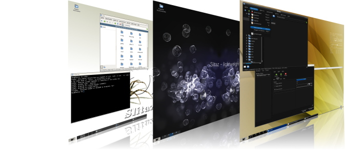

主页
Slitaz！启动！
Bienvenue - Bem-vindo - Willkommen - 欢迎进入SliTaz GNU/Linux网站！
Slitaz 是一个免费小巧的GNU/Linux发行版。它可以从光盘或USB设备加载，完整地在内存中运行，也可以安装到硬盘中。Slitaz以LiveCD的形式发布，ISO镜像通常不超过30MB。这是个小巧快速而又完整的系统。同时，Slitaz还提供轻快的桌面环境，更有官方文档和配置工具帮助你更轻松地掌握这个小巧易用的系统。 更多信息...
如果你想成为一名Slitaz开发者，维护网站，增加软件包，你可以加入Slitaz邮件列表同开发者联系。
|  |
头版头条
Slitaz网站提供Slitaz计划的主要新闻和 Slitaz实验室里各种子计划的新闻. 它们都通过XML RSS feed的形式提供。我们还提供一份简单的每月时讯，这份时讯有中文和英文版本。
- 2009年5月19日 SliTaz 出席日内瓦LinuxDays 2009
LinuxDays在日内瓦进行期间，Slitaz协会会在Association Village出现，并且会在星期三发布演讲。这个演讲主要讲述"SliTaz Business Server" 在邮件服务器、嵌入式设备等方面的应用。 在这三天里，工作组成员将会详细策划Slitaz展览。我们还会对Slitaz进行宣传，包括创建可启动U盘（LiveUSB）和CD。LinuxDays LiveCD会包括不少设计用于移动的软件。你也可以到现场给我们提问，和我们聊天。你可以在SliTaz实验室和 2009.linuxdays.ch找到相关资料。 - 2009年4月16日 SliTaz GNU/linux 2.0 发布
经过一年的漫长等待，Slitaz工作组发布了新的稳定版——SliTaz GNU/linux 2.0。在这一年间，我们一直致力于提供一个轻快小巧、稳定的操作系统。ISO镜像文件大小不足30M额的Slitaz提供了一个完整的桌面环境，还可以通过软件包管理器安装超过1400个软件包。这只要轻点鼠标就可以完成。这个新版本提供分区自动挂载（兼容NTFS）、无线网络支持、gPXE和boot.slitaz.org的网络启动、USB和PCI设备的自动选择、软件包管理器和控制中心，还提供各种管理系统的图形界面工具。你可以更轻松地通过小工具轻松创建可启动USB设备和LiveCD。LiveCD包含Firefox 3.0.8、gFTP、LostIRC、ePDFView、mtPaint、 Transmission、Osmo和Alsaplayer。网站的文档已经升级，你还可以阅读ISO中的发行笔记来查看这个版本更详细的更新。SliTaz GNU/linux 2.0现在已经可以在官方源下载。 - 2009年3月27日 实验室和新的镜像源
我们会不断提升发行版和服务的质量。近期SliTaz Labs顺利运行，这个平台可以让Slitaz贡献者更有效地合作，可以报告BUG、提出新要求。SliTaz Labs给每个项目提供了一个wiki、一个讨论区、一个新闻模块等内容。SliTaz Labs还提供计划内容总览、更新报告等功能。你可以注册SliTaz Labs来参与计划或者发表评论。我们还增添了2个新的镜像源：瑞士的SWITCHmirror和中国的LupaWorld。感谢对我们的支持。 - 2009年3月20日 SliTaz出席巴黎Solutionslinux 2009
Slitaz将会出席在巴黎的2009 Solutionslinux会展，我们将在观众席上派出3个成员。此外，其他Slitaz的贡献者也将会在会场的各个角落出现。现在你就有了一个测试各种电脑的好时机，例如你可以做“EeePC是否能使用Slitaz”的试验。你还可以现场创建一个Slitaz可启动U盘（自带），如果没带U盘，也可以购买U盘或LiveCD。你还可以了解关于Slitaz的信息，或者和Slitaz工作组的成员交流讨论。网站： www.solutionslinux.fr, Village associations, SliTaz Stand. - 2009年2月28日 - 新Cooking版本 20090228
Slitaz工作组发布了一个新的Cooking版本，这个版本修复了很多BUG，升级了很多软件，做了许许多多的改进，还增添了许多新特性。例如PCI/USB设备可以由Tazhw自动管理，设备的控件可以通过图形界面，轻点鼠标完成，Tazndis可以让你通过简单的图形界面管理Windows驱动。图形界面的软件包管理器变得更加简单易用，LiveUSB设备也可以通过一个窗口轻松创建。 Netbox可以显示所有的网络连接，新增的WIfibox可以连接上无线网络。你还可以手动或者通过Tazhw来管理“喜爱网络”、设置网卡。在图形界面方面，也新增了一个可以启用/禁用自启动程序的GUI，你可以在Openbox的菜单中打开它。此外，Desktopbox也新增了一个简易的通知程序。我们在为下一个稳定版做准备。你可以到 下载页面或任意一个源下载这个版本的ISO镜像。